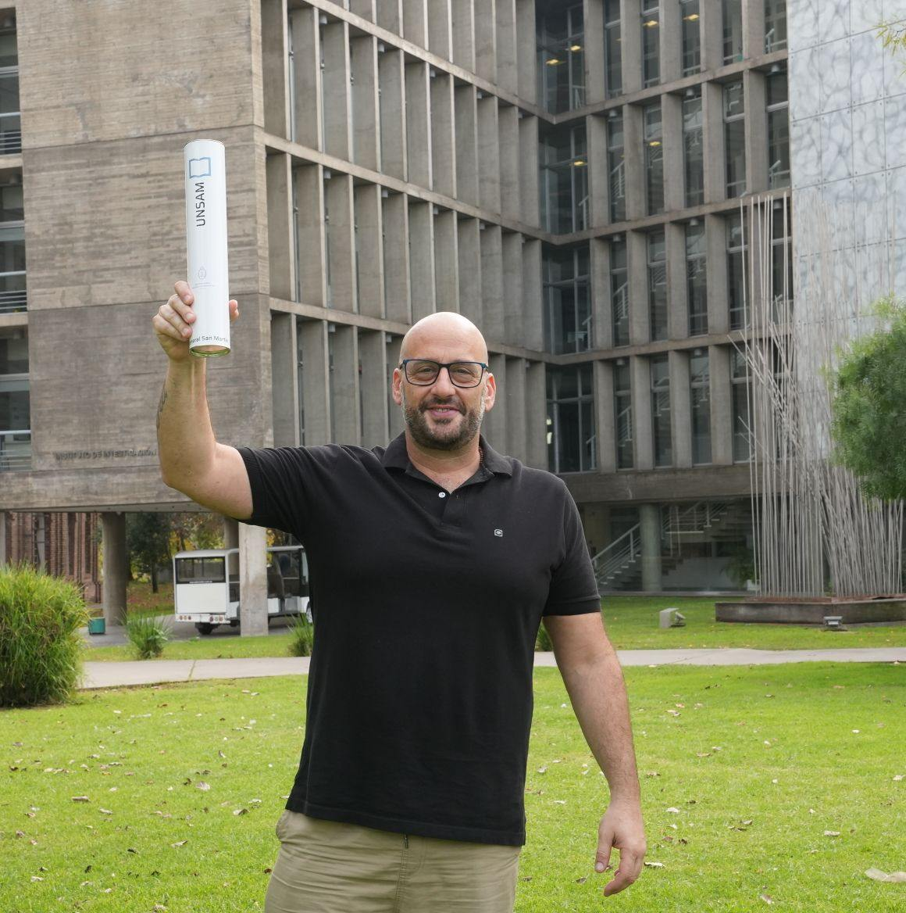

Gestión provincial
Segundo artículo del blog
Bajada breve del segundo trabajo, que cuenta de qué se trata en dos líneas.
Técnico en Administración Pública · Análisis y reflexiones sobre la gestión estatal

Una bajada que sintetice el argumento central del artículo en dos o tres líneas. Pensada para que el lector entienda de qué se trata el análisis antes de hacer clic.
Bajada breve del segundo trabajo, que cuenta de qué se trata en dos líneas.

Bajada breve del tercer trabajo, que cuenta de qué se trata en dos líneas.

Bajada breve del cuarto trabajo, que cuenta de qué se trata en dos líneas.

Técnico en Administración Pública. Este espacio reúne mis trabajos, análisis y columnas sobre políticas públicas y gestión estatal en los tres niveles de gobierno: nacional, provincial y municipal. Próximamente Licenciado en Administración Pública.